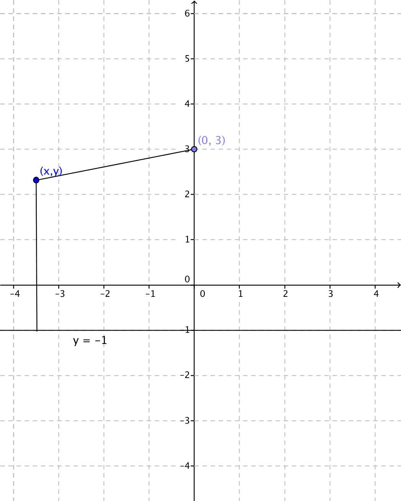
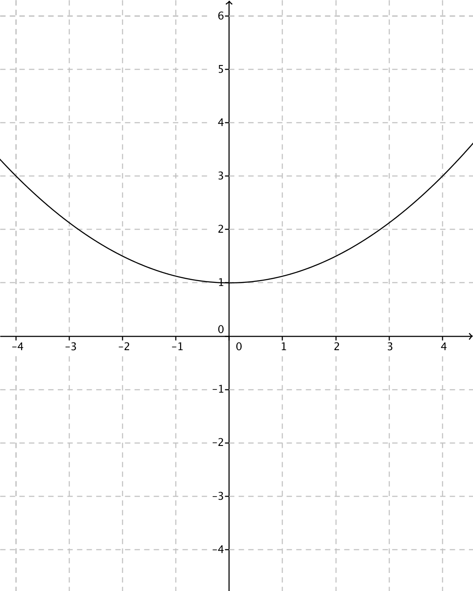
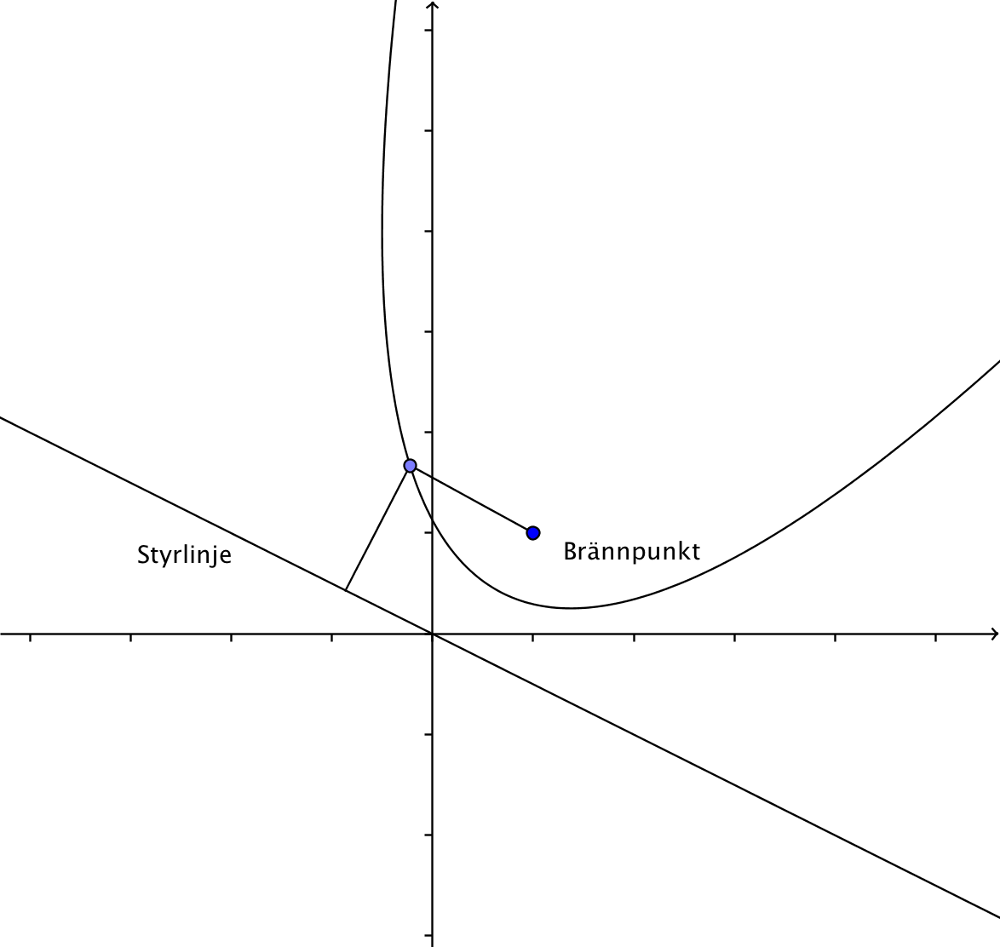
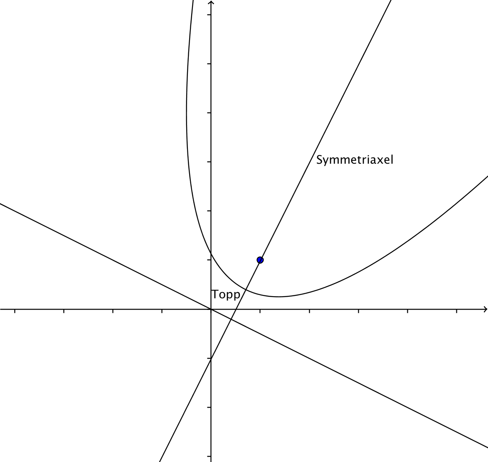
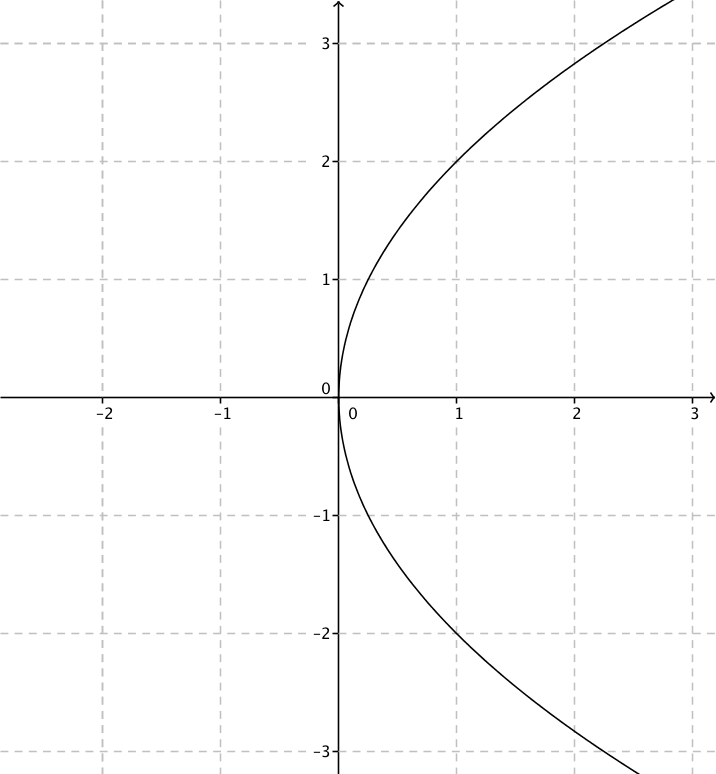
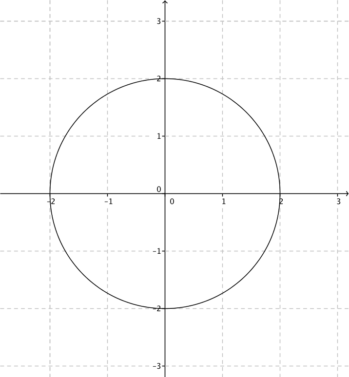

14. Parabeln
Bestäm de punkter \( (x,y) \) som ligger på samma avstånd från linjen \( y=-1 \) och \( (0,3) \).
Lösning
Idén är följande

Vi arbetar utgående två stycken avstånd.
Avståndet mellan \( (0,3) \) och \( (x,y) \) är \( \sqrt{(x-0)^2+(y-3)^2} = \sqrt{x^2+(y-3)^2} \).
Avståndet mellan punkten \( (0,3) \) och linjen \( y=-1 \) är avståndet mellan deras y-koordinater, \( \mid y-(-1)\mid = \mid y+1\mid \).
Det som gäller är att dessa avstånd skall vara samma
\( \begin{array}{rcll} \sqrt{x^2+(y-3)^2} & = & \mid y+1 \mid & \mid (\quad)^2 \\ x^2+(y-3)^2 & = & (y+1)^2 \\ x^2 + y^2 -6y+9 & = & y^2+2y+1 \\ -8y & = & -x^2-8 \\ y & = & \dfrac{1}{8}x^2+1 \\ \end{array} \)
Vi har en parabel, \( y=\dfrac{1}{8}x^2+1 \)
Styrlinjen för parabeln är \( y=-1 \) och brännpunkten är \( (0,3) \).
Parabeln ser ut som

För att ha en parabel behöver vi en brännpunkt och en styrlinje. Alla punkter som ligger på samma avstånd från dessa två är punkter på parabeln.

Parabeln är symmetrisk kring den linje som är vinkelrät mot styrlinjen och som går genom brännpunkten. Punkten med kortas avstånd från styrlinjen och brännpunkten är parabelns topp.

Om parabeln har samma riktning som \( y \)-axeln är parabelns ekvation \( y=ax^2+bx+c \). Är \( a > 0 \) öppnar sig parabeln uppåt och är \( a < 0 \) öppnar sig parabeln nedåt.

Om parabeln har samma riktning som \( x \)-axeln är parabelns ekvation \( x=ay^2+by+c \). Är \( a > 0 \) öppnar sig parabeln mot höger och är \( a < 0 \) öppnar sig parabeln mot väster.
Parablar kan även öppna sig på andra sätt så att de inte öppnar sig vackert längs med varken \( x- \) eller \( y \)-axeln. I uppgift 9 har du en sådan parabel.
Exempel 1 Rita kurvan \( x-y^2+2=0 \). Bestäm skärningspunkten mellan kurvan och linjen \( y=\dfrac{1}{2}x-3 \).
Lösning
För att rita kurvan skriver vi först den som \( x=y^2-2 \) och sedan utnyttjar vi ett par punkter på kurvan.
\( \begin{array}{rrc} y & x=y^2-2 & (x,y) \\ -2 & (-2)^2-2 = 2 & (2,-2) \\ -1 & (-1)^2-2 = -1 & (-1,-1) \\ 0 & 0^2-2=-2 & (0,-2) \\ 1 &1^2-2=-1 & (-1,1) \\ 2 & 2^2-2=2 & (2,2) \\ \end{array} \)
Vi märker att vi har en "normal" parabel som vi har vridit 90 grader medurs.

Skärningspunkten bestämmer vi helt normalt:
\( \left\{ \begin{array}{l} x-y^2+2=0 \\ y=\dfrac{1}{2}x-3 \\ \end{array} \right. \)
Insättning ger
\( \begin{array}{rcl} x -(\dfrac{1}{2}x-3)^2+2 & = & 0\\ x-\dfrac{1}{4}x^2+3x-9+2 & = & 0 \\ -\dfrac{1}{4}x^2+4x-7 & = & 0 \\ x & = & \dfrac{-4\pm\sqrt{4^2-4 (-\dfrac{1}{4}) \cdot (-7)}}{2\cdot (-\dfrac{1}{4})} \\ & = & \dfrac{-4 \pm 3}{-\dfrac{1}{2}} \\ x_1 = \dfrac{-4-3}{-\dfrac{1}{2}} & & x_2 = \dfrac{-4+3}{-\dfrac{1}{2}} \\ x_1 = 14 & & x_2=2 \\ \end{array} \)
y-koordinaterna är: \( y=\dfrac{1}{2}\cdot 14 -3 = 4 \) och \( y=\dfrac{1}{2}\cdot 2 -3 = -2 \).
Skärningspunkterna är \( (2,-2) \) och \( (14,4) \) .

Uppgifter
- Bestäm skärningspunkterna för parabeln \( y=\dfrac{1}{4}x^2-2 \) och linjen \( y=x+1 \).
Vi bildar ekvationssystemet
\( \left\{ \begin{array}{l} y=\dfrac{1}{4}x^2-2\\ y=x+1\\ \end{array} \right. \).
som har lösningarna \( (-2,-1) \) och \( (6,7) \).
- Bestäm skärningspunkterna mellan \( x=-y^2-y+1 \) och \( y=x+2 \).
Vi löser ekvationssystemet
\( \left\{ \begin{array}{l} x=-y^2-y+1\\ y=x+2\\ \end{array} \right. \)
som har lösningarna \( (-5,-3) \) och \( (-1,1) \).
- Bestäm skärningspunkterna mellan \( f(x) = x^2-2x-3 \) och \( g(x)=-x^2-1 \).
Vi löser ekvationssystemet
\( \left\{ \begin{array}{l} y=x^2-2x-3 \\ y=x^2-1 \\ \end{array} \right. \)
som har lösningarna \( (-1,0) \) och \( (2,-3) \).
- Bestäm skärningspunkterna mellan parabeln \( x^2-y-1=0 \) och cirkeln \( x^2+y^2-4y-1=0 \). Bestäm först antal skärningspunkter genom att rita en bild.
Skärningspunkter är 4 st.
Vi löser ekvationssystemet
\( \left\{ \begin{array}{l} x^2-y-1=0 \\ x^2+y^2 -4y -1 = 0 \\ \end{array} \right. \)
Skärningspunkterna är \( (-1,0) \), \( (1,0) \), \( (-2,3) \) och \( (2,3) \).
Vill du lösa ekvationssystemet för hand löser du ut \( x^2 \) från bägge ekvationer.
- Bestäm ekvationen för parabeln som går genom punkterna \( (-4,12) \), \( (-2,4) \) och \( (0,0) \) och som följer \( y \)-axeln.
Skriv parabelns ekvation som \( y=ax^2+bx+c \) och bilda ett ekvationssystem.
Vårt ekvationssystem är
\( \left\{ \begin{array}{l} 12=a(-4)^2+b(-4)+c\\ 4=a(-2)^2+b(-2)+c\\ 0=a\cdot 0 + b\cdot 0 +c\\ \end{array} \right. \)
ger att \( a=\dfrac{1}{2} \), \( b=-1 \) och \( c=0 \). Parabelns ekvation är \( y=\dfrac{1}{2}x^2-x \).
- Bestäm ekvationen för parabeln som går genom punkterna \( (-3,-1) \), \( (-1,1) \) och \( (3,2) \) och som följer \( x \)-axeln.
Parabelns ekvation har formen \( x=ay^2+by+c \).
Vi bilar ekvationssystemet
\( \left\{ \begin{array}{rl} -3= & a(-1)^2+b(-1)+c\\ -1= & a\cdot 1 +b\cdot 1+c\\ 3= & a\cdot 2+b\cdot 2+c\\ \end{array} \right. \)
som har lösningarna \( a=1 \), \( b=1 \) och \( c=-3 \). Parabelns ekvation är \( x=y^2+y-3 \).
- En gammal stentunnels tvärsnitt har formen av en parabel. Tunneln är 3,0 m hög och 6,0 m bred. Ryms en specialfrakt som är 3,0 m bred och 2,5 m hög genom tunneln då man kör mitt igenom tunneln?
Placera tunneln så att den är symmetrisk kring \( y \)-axeln. Untyttja avstånden för att bestämma ekvationen för parabeln.
Parabeln skall genom punkterna \( (-3,0) \), \( (0,3) \) och \( (3,0) \). Vi får parabelns ekvation till \( f(x)=-\dfrac{1}{3}x^2+3 \).
Om bilen är 3,0 m bred betyder det att den kör 1,5 m från mittpunkten. \( f(1,5)=2,25 \)
Eftersom bilen är 2,5 m hög tar det i tunneltaket som är 2,25 m högt.
Svar: Nej
- Kombinera rätt ekvation för parabel med rätt bild.
Välj bland ekvationerna \( 4x-y^2=0 \), \( 4x^2-y^2=0 \), \( x^2+y^2-4=0 \) och \( 4x^2-y=0 \).
Ekvation Graf 
 
 Ekvation Graf \( 4x^2-y=0 \) \( 4x-y^2=0 \) \( 4x^2-y^2=0 \) \( x^2+y^2-4=0 \) - Bestäm ekvationen för parabeln vars brännpunkt är \( (0,1) \) och vars styrlinje är \( y=-3 \).
Arbeta via avstånd mellan punkten \( (0,1) \) och \( (x,y) \) och avståndet mellan \( (x,y) \) och \( y=-3 \).
Avståndet mellan \( (0,1) \) och \( (x,y) \) är \( \sqrt{x^2+(y-1)^2} \).
Avståndet mellan punkten \( (x,y) \) och linjen \( y=-3 \) är \( \mid y+3\mid \).
Dessa skall ha samma värde, \( \sqrt{x^2+(y-1)^2} = \mid y+3 \mid \).
Vi kvadrerar och förenklar, parabelns ekvation är \( y=\dfrac{1}{8}x^2-1 \).
- Bestäm ekvationen för parabeln vars brännpunkt är \( (-3,-2) \) och vars styrlinje är \( x=0 \).
Avståndet mellan \( (-3,-2) \) och \( (x,y) \) är \( \sqrt{(x+3)^2+(y+2)^2} \).
Avståndet mellan \( (x,y) \) och styrlinjen \( x=0 \) är \( \mid x - 0 \mid \).
Dessa avstånd skall vara lika stort, \( \sqrt{(x+3)^2+(y+2)^2} = \mid x \mid \).
Vi kvadrerar och förenklar, ekvationen är \( y^2+6x+4y+13=0 \).
- Bestäm ekvationen för parabeln vars styrlinje är \( y=x-1 \) och vars brännpunkt är \( (-1,-1) \).
Avståndet mellan \( (-1,-1) \) och punkten \( (x,y) \) är \( \sqrt{(x+1)^2+(y+1)^2} \).
Avståndet mellan punkten \( (x,y) \) och \( y=x-1 \) är \( \dfrac{\mid 1\cdot x -1\cdot y-1\mid}{\sqrt{1^2+(-1)^2}} \).
Dessa avstånd skall vara lika stora, \( \sqrt{(x+1)^2+(y+1)^2}=\dfrac{\mid 1\cdot x -1\cdot y-1\mid}{\sqrt{1^2+(-1)^2}} \).
Vi kvadrerar och förenklar. Ekvationen är \( x^2+2xy+y^2+6x+2y+3=0 \).